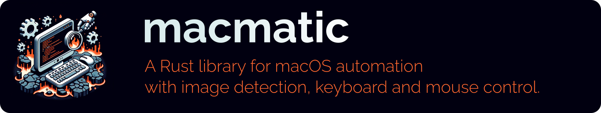

Expand description

Getting started
Requirements
OpenCV: brew install opencv
$ export DYLD_FALLBACK_LIBRARY_PATH="$(xcode-select --print-path)/usr/lib/:/Library/Developer/CommandLineTools/usr/lib/:${DYLD_FALLBACK_LIBRARY_PATH}"
$ cargo add --git https://github.com/gmasse/macmatic.git
$ cargo add enigo
List available windows:
fn main() {
println!("{}", macmatic::WindowList::new().prettify());
}Find image and click on it:
use std::path::Path;
use std::error::Error;
use enigo::*;
use macmatic::Bot;
fn main() -> Result<(), Box<dyn Error>> {
let mut bot = Bot::new();
let enigo = Enigo::new();
bot.set_controller(enigo);
bot.set_window_from_name("Wikipedia-logo-v2.svg.png");
bot.activate_window()?; // click on the top of the window to make it active
bot.click_on_image(Path::new("W.png"), 500)?; // find the image W.png in the window and click on it
Ok(())
}Documentation
Example
$ git clone https://github.com/gmasse/macmatic.git
$ cd macmatic
$ export DYLD_FALLBACK_LIBRARY_PATH="$(xcode-select --print-path)/usr/lib/:/Library/Developer/CommandLineTools/usr/lib/:${DYLD_FALLBACK_LIBRARY_PATH}"
$ cargo run --example preview
An example of the macmatic framework
Usage: preview [OPTIONS] <COMMAND>
Commands:
list list windows name
screenshot screenshot a window
test_find Search the template image in a window
test_preview Example of automation of the Preview app
help Print this message or the help of the given subcommand(s)
Options:
-w, --window <NAME> Name of the window to capture (prefix with ~ for regexp)
-i, --id <ID> Id of the window to capture
-h, --help Print helpList available windows
$ cargo run --example preview list
Id Window Name Window Owner Name
------------------------------------------------------------------
11833 Item-0 Antivirus for Mac
8653 Item-0 Rectangle
8899 Item-0 Bitwarden
21915 Item-0 Spotlight
21505 Menubar Window Server
14474 cargo run --example preview... iTerm2
25829 Wikipedia-logo-v2.svg.png Preview
Image detection
$ open -a Preview examples/img/Wikipedia-logo-v2.svg.png
$ RUST_LOG=debug cargo run --example preview -- --window 'Wikipedia-logo-v2.svg.png' test_find --template 'examples/img/W.png'
[2023-10-09T21:07:49Z DEBUG preview] Display size: (2560, 1440)
[2023-10-09T21:07:49Z DEBUG macmatic] Activating window
[2023-10-09T21:07:49Z DEBUG macmatic] Click on: 565, 39
[2023-10-09T21:07:51Z DEBUG macmatic] found: Rect { x: 1192, y: 676, width: 300, height: 240 }
[2023-10-09T21:07:51Z INFO preview] Template found at Rect {
x: 1192,
y: 676,
width: 300,
height: 240,
}
Mouse and keybord automation
$ RUST_LOG=debug cargo run --example preview -- --window 'Wikipedia-logo-v2.svg.png' test_preview
[2023-10-09T21:09:21Z DEBUG preview] Display size: (2560, 1440)
[2023-10-09T21:09:21Z DEBUG macmatic] Activating window
[2023-10-09T21:09:21Z DEBUG macmatic] Click on: 565, 39
[2023-10-09T21:09:23Z DEBUG macmatic] found: Rect { x: 1192, y: 676, width: 300, height: 240 }
[2023-10-09T21:09:23Z DEBUG macmatic] Mouse down on: 600, 367
[2023-10-09T21:09:24Z DEBUG macmatic] Mouse up on: 750, 487
[2023-10-09T21:09:24Z DEBUG macmatic] Key down: Control
[2023-10-09T21:09:24Z DEBUG macmatic] Key down: Meta
[2023-10-09T21:09:24Z DEBUG macmatic] Key click: Layout(
'T',
)
[2023-10-09T21:09:25Z DEBUG macmatic] Key up: Meta
[2023-10-09T21:09:25Z DEBUG macmatic] Key up: Control
[2023-10-09T21:09:25Z DEBUG macmatic] Typing: macmatic
[2023-10-09T21:09:26Z DEBUG macmatic] Searching examples/img/W.png
[2023-10-09T21:09:26Z DEBUG macmatic] Image found on: Rect { x: 1192, y: 735, width: 300, height: 240 }
[2023-10-09T21:09:26Z DEBUG macmatic] Click on: 675, 456
Modules
- Error reporting
Structs
- The
Botstruct provides automation capabilities for interacting with a window. - Structure representing the absolute coordinates of a window.
- Structure representing a rectangle zone in the window.
- The
Windowstruct represents a single window. - The
WindowListstruct represents a list of windows.